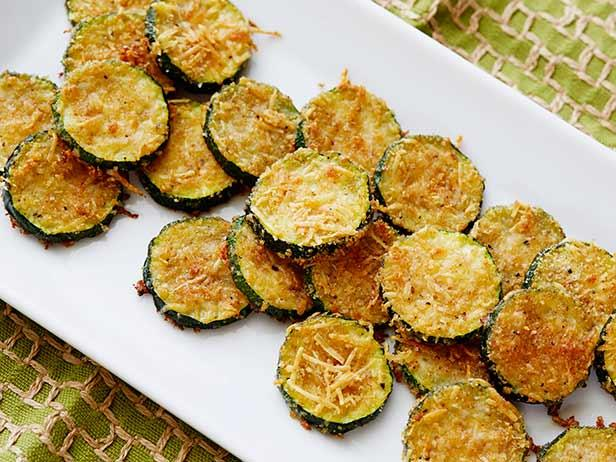

Fried Zucchini

2 medium zucchini
2 eggs
¾ cup all-purpose flour
½ cup grated parmesan cheese.
2 cups seasoned bread crumbs
canola oil for frying
- Trim ends off zucchini and slice into ½" slices.
- Beat eggs with salt and pepper to taste.
Combine parmesan cheese, bread crumbs and salt & pepper to taste in a separate dish.
- Pour oil into a pan to ½" deep and heat over medium heat.
- Dredge zucchini in flour, dip in eggs and finally dip in bread crumbs. Repeat with remaining slices.
- Add zucchini to the pan, a few at a time (don't crowd) cooking 2-3 minutes per side.
- Drain on paper towels. Season with salt if desired.